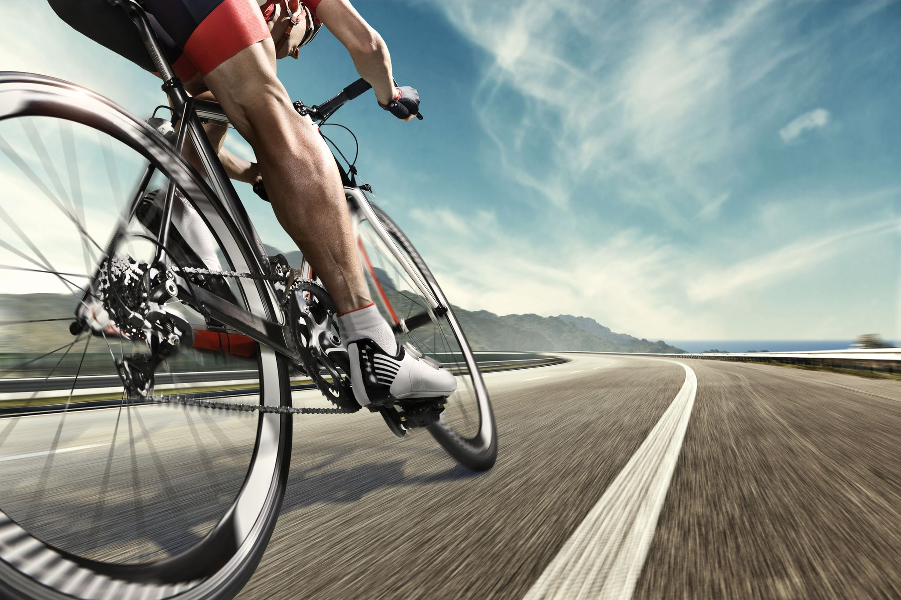

| La bicicleta, coloquialmente llamada bici (también denominada como cicla o ciclo en Colombia y Cuba, chiva o rila, en México y cleta en Chile), es un vehículo de transporte personal de propulsión humana. Es impulsada por el propio viajero, que acciona el vehículo con el esfuerzo muscular de las piernas, en particular mediante pedales o manivelas. Sus componentes básicos son dos ruedas,3 generalmente de igual diámetro y dispuestas en línea, un sistema de transmisión de pedales, un cuadro que le da la estructura e integra los componentes, un manillar para controlar la dirección y un sillín para sentarse. El desplazamiento se obtiene al girar con las piernas los pedales dispuestos de forma simétrica, cada uno con una palanca conocida como manivela están ensamblados en el cuadro, y en general el pedal derecho es el que tiene la estrella mayor o plato donde se monta la cadena que a su vez hace girar el piñón, el cual finalmente hace girar la rueda trasera sobre el suelo provocando entonces el desplazamiento. El diseño y la configuración básicos de la bicicleta han cambiado poco desde la primera transmisión de cadena desarrollada alrededor del año 1885. Es un medio de transporte sano, ecológico, sostenible y económico, válido para trasladarse tanto por ciudad como por zonas rurales. Su uso está generalizado en la mayor parte de Europa, y llega a ser, en países como Suiza, Alemania, Países Bajos, Bélgica, algunas zonas de Polonia y los países escandinavos, uno de los principales medios de transporte. En Asia, especialmente en China y la India, es el principal medio de transporte. En Latinoamérica también es un método de transporte muy utilizado. Por ejemplo en Argentina, específicamente en la Ciudad de Buenos Aires, el uso de las bicicletas se incrementó 4% incluso antes de la pandemia de COVID-19 en el 2020 y para finales del 2023, la ciudad estima alcanzar un millón de viajes diarios en bici. |  |
|
|